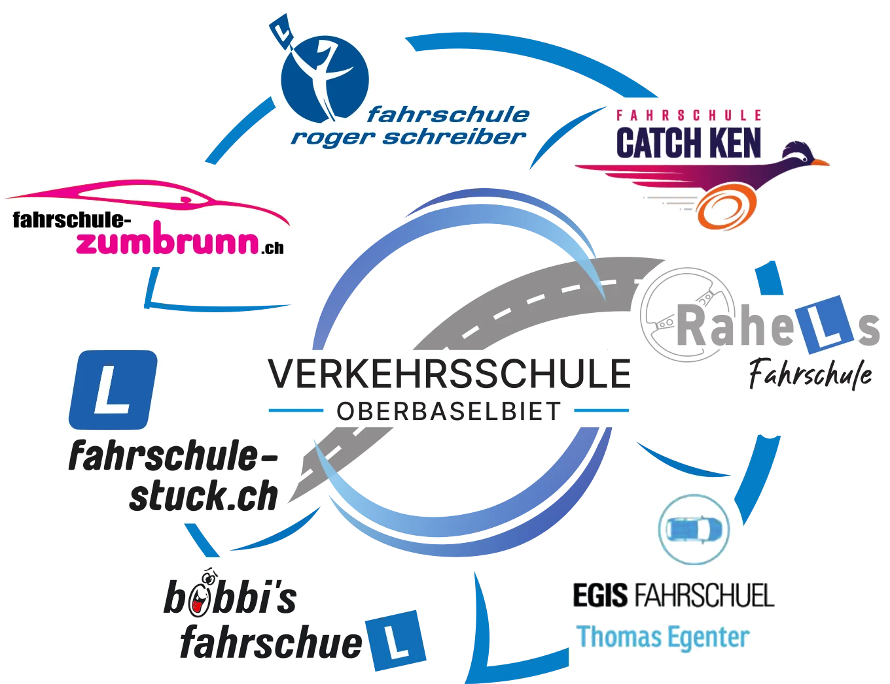

9 Fahrlehrer/innen · 3 Lokale · 1 Anmeldung
Wähle dein Lokal, suche dir einen Termin aus und melde dich direkt online an. Einfacher geht’s nicht.

Neu seit 1. Januar 2027
Den Verkehrskundeunterricht (VKU) machst du neu vor der Theorieprüfung, also bevor du den Lernfahrausweis bekommst. Der Besuch des VKU ist Voraussetzung für die Anmeldung zur Theorieprüfung. So kann das im Kurs erworbene Wissen bereits ab der ersten Lernfahrt umgesetzt werden. Mit diesen Anpassungen will der Bundesrat die Verkehrssicherheit weiter erhöhen.
Mehr InformationenQuellen
Kurs
Der Verkehrskundeunterricht (VKU) ist ein staatlich vorgeschriebener Theoriekurs, der angehende Auto- und Motorradfahrende optimal auf die Praxis im Strassenverkehr vorbereiten soll. Er dient dazu, den Verkehrssinn zu schärfen, Gefahren frühzeitig zu erkennen und eine defensive, verantwortungsbewusste Fahrweise zu fördern. Der Kurs dauert 8 Stunden und ist auf 4 Abende verteilt. Die Kursbestätigung ist unbeschränkt gültig!
CHF XX.XX
inklusive Lernmaterial
Kurs
Der Nothelferkurs ist ein gesetzlich vorgeschriebener, 10-stündiger Kurs in lebensrettenden Sofortmassnahmen. Er vermittelt das theoretische und praktische Grundwissen, um bei Verkehrsunfällen oder medizinischen Notfällen im Alltag rasch und richtig Erste Hilfe zu leisten. Den Kurs musst du gemacht haben, damit du überhaupt zur Theorieprüfung zugelassen wirst.
Der Kurs ist stark praxisorientiert und deckt diese Schwerpunkte ab:
Variante Blended Learning oder E-Learning: Statt im herkömmlichen Nothelferkurs kannst du den gleichen Inhalt auch in zwei Teilen lernen. Zuerst die Theorie im Selbststudium, danach den Praxisteil mit Fallbeispielen bei einem Samariterverein deiner Wahl.
CHF XX.XX
inklusive Ausweis
Anmeldung bei den Samaritern BaselBeispieltermine für den Entwurf
Neun Fahrlehrer/innen aus der Region, ein gemeinsames Kursangebot.
Danke, das hat geklappt.
Du bekommst gleich eine Bestätigung per E-Mail. Wir sehen uns im Kurs.
Du gehst diese Schritte der Reihe nach:
Je nach Kanton brauchst du einzelne Nachweise wie Nothelferkurs, Sehtest oder Passfoto schon beim Gesuch.
Den Lernfahrausweis fürs Auto (Kategorie B) gibt es ab 17 Jahren, fürs Motorrad A1 ab 15 beziehungsweise 16 und für die Kategorie A ab 18 Jahren. Das Gesuch kannst du schon einen Monat vor dem Mindestalter einreichen. Zur Theorieprüfung kannst du dich in Baselland vier Wochen vor dem Mindestalter anmelden. Losfahren darfst du aber erst, wenn du das Mindestalter erreicht hast.
Die FABER-PIN ist deine persönliche Nummer im Fahrberechtigungsregister. Du musst sie nicht extra beantragen. Du bekommst sie vom Strassenverkehrsamt, sobald du das Gesuch um den Lernfahrausweis eingereicht hast, und sie steht auch auf deinem Lernfahrausweis. Mit ihr werden auch dein Nothelferkurs und dein Sehtest digital erfasst. Wir brauchen sie bei der Anmeldung, um deinen Kursbesuch zu erfassen.
Den Nothelferkurs brauchst du ganz am Anfang, für den Lernfahrausweis. Du reichst zuerst das Gesuch ein und bekommst deine FABER-PIN, damit wird der Nothelferkurs digital erfasst. Der Kurs dauert 10 Stunden inklusive Pausen und ist auf mindestens zwei Tage verteilt. Die Bescheinigung ist 6 Jahre gültig. [Ab welchem Alter ihr Teilnehmende aufnehmt, bitte ergänzen]
Im VKU lernst du, Gefahren im Strassenverkehr früh zu erkennen und richtig zu reagieren. Der Kurs dauert 8 Lektionen, aufgeteilt auf 4 Abende à 2 Lektionen. Im Kurs lernst du auch, wie du sicher mit Fahrassistenz- und Automatisierungssystemen umgehst. Die Kursbestätigung brauchst du für die Anmeldung zur Theorieprüfung.
Du besuchst den VKU vor der Theorieprüfung, also bevor du den Lernfahrausweis hast. Du darfst ihn frühestens sechs Monate vor dem Mindestalter für den Lernfahrausweis machen, fürs Auto (Kategorie B) also ab 16½ Jahren, für das Motorrad A1 ab 14½ beziehungsweise 15½ Jahren und für die Kategorie A ab 17½ Jahren.
Nein. Wenn du bereits einen Führerausweis der Kategorie A, A1, B oder B1 hast, musst du den VKU nicht nochmals besuchen.
Die Kursbestätigung ist ab dem Kursabschluss unbeschränkt gültig. Das gilt schon seit 2021.
Für Auto (Kategorie B) und Motorrad (Kategorie A und A1) gibt es die Basistheorieprüfung mit 55 Fragen. Dazu gehören auch Fahrassistenz- und Automatisierungssysteme, Verkehrskunde und Verkehrssinn. Darum machst du den VKU vor der Theorieprüfung.
Du legst die Basistheorieprüfung mit 55 Fragen ab, auch wenn du die gelbe Karte schon früher bekommen hast. Es lohnt sich, den VKU vorher zu besuchen, weil seine Inhalte in der Prüfung vorkommen.
Nein. Du kannst dich in jedem unserer drei Lokale anmelden, egal bei wem du später Fahrstunden nimmst. Anmelden kann sich jede und jeder.
Mit TWINT oder bar.
Ja, du bekommst eine Bestätigung per E-Mail.
Melde dich so früh wie möglich bei uns. Bis 72 Stunden vor dem Kurs kannst du kostenlos absagen. Sagst du später ab, wird der volle Kursbetrag fällig.
Melde dich direkt bei einer unserer Fahrlehrer/innen.